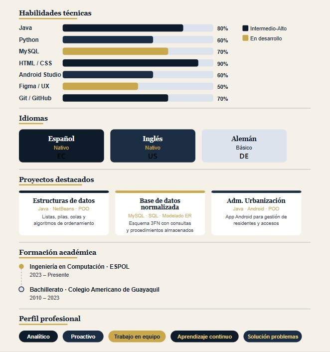

Pablo demostró una gran capacidad para resolver problemas complejos de algoritmos con una metodología clara y eficiente.
👤 Sobre mí
Soy estudiante de Ingeniería en Computación en la Escuela Superior Politécnica del Litoral (ESPOL), con una sólida base en programación orientada a objetos, estructuras de datos y diseño de software. Me apasiona crear soluciones tecnológicas eficientes y centradas en el usuario.
Mi enfoque combina pensamiento analítico con habilidades prácticas en desarrollo de software, bases de datos y prototipado de interfaces, buscando siempre la mejora continua en cada proyecto.
⚙️ Habilidades Técnicas
Lenguajes y Tecnologías
Java
Python
MySQL
HTML5
CSS3
Git / GitHub
Android Studio
Figma
NetBeans
VS Code
Competencias principales (ordenadas por dominio)
- Programación Orientada a Objetos y Estructuras de Datos
- Diseño y normalización de bases de datos relacionales
- Prototipado UI/UX y principios de HCI
- Desarrollo de aplicaciones móviles en Android Studio
- Versionamiento con Git y GitHub
Metodologías y buenas prácticas
- Patrones de diseño para arquitecturas escalables
- Algoritmos de búsqueda y ordenamiento
- Análisis ético del desarrollo de software
- Resolución de problemas sociotécnicos
💼 Experiencia
Desarrollo de Software y Algoritmos (Proyectos Académicos)
Desarrollador Java / Estudiante de Ingeniería
Diseño y ejecución de programas utilizando Programación Orientada a Objetos y Estructuras de Datos en el entorno NetBeans. Implementación de lógica compleja mediante algoritmos de búsqueda y ordenamiento para la resolución eficiente de problemas técnicos.
Gestión de Sistemas de Bases de Datos
Analista de Datos Jr.
Diseño, normalización y creación de esquemas de bases de datos utilizando MySQL. Gestión de consultas SQL para el almacenamiento y recuperación de información, asegurando la integridad de los datos en proyectos de software.
Diseño de Software e Interacción
Diseñador de Software / Especialista en HCI
Aplicación de patrones de diseño para la arquitectura de software escalable. Creación de prototipos y análisis de interfaces bajo principios de Interacción Humano-Computador, enfocados en mejorar la experiencia del usuario (UX) y la usabilidad del sistema.
Análisis de Sistemas y Computación
Investigador Técnico
Análisis del impacto de la tecnología en la sociedad y evaluación ética del desarrollo de software. Aplicación de pensamiento crítico para la resolución de problemas sociotécnicos en el ámbito de la ingeniería.
🎓 Formación
2023 – Presente
Ingeniero en Computación
Escuela Superior Politécnica del Litoral (ESPOL)
2010 – 2023
Bachillerato – Segundo Nivel
Colegio Americano de Guayaquil
🌐 Idiomas
Español
Nativo
Inglés
Nativo
Alemán
Básico
Comparativa de habilidades por idioma
| Idioma | Comprensión | Expresión oral | Escritura |
|---|---|---|---|
| Español | Nativa | Nativa | Nativa |
| Inglés | Nativa | Nativa | Avanzada |
| Alemán | Básica | Básica | Básica |
🚀 Proyectos Destacados
Sistema de Gestión con Estructuras de Datos
Java · NetBeans · POO
Implementación de listas enlazadas, pilas y colas para gestión eficiente de datos, con algoritmos de búsqueda binaria y ordenamiento QuickSort.
Base de Datos Normalizada
MySQL · SQL · Modelado ER
Diseño e implementación de un esquema de base de datos en 3FN con procedimientos almacenados y consultas optimizadas para reportes de negocio.
Prototipo de App Móvil
Android Studio · Figma · UX
Prototipado de alta fidelidad y desarrollo de una aplicación Android aplicando principios de Interacción Humano-Computador para mejorar la usabilidad.
Administración de Urbanización
Java · Android Studio · POO · Archivos
Aplicación Android para la gestión de una urbanización. Controla ingreso y salida de residentes, visitantes y vehículos, con persistencia de datos en archivos de texto y manejo de hilos.
💬 Referencias
Su entendimiento de las bases de datos y la normalización fue fundamental para el éxito del proyecto académico.
Pablo tiene una visión orientada al usuario que realmente se nota en la calidad de sus prototipos y diseños de interfaz.
🎬 Multimedia
Ubicación – ESPOL, Guayaquil
Imagen de referencia

Proyectos - Pablo Chacón
✉️ Contacto
¿Tienes una oportunidad, propuesta de colaboración o simplemente quieres conectar? Completa el formulario y me pondré en contacto contigo pronto.